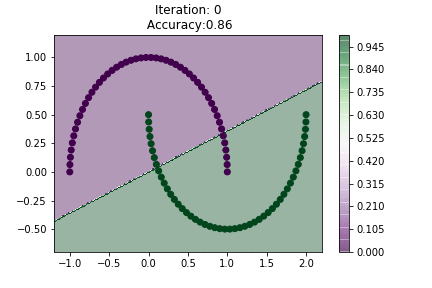

from sklearn.datasets import make_moons
import matplotlib.pyplot as plt
import numpy as np
%matplotlib inlineSome Neural Network Classification
X, y = make_moons()plt.scatter(X[:, 0], X[:, 1], c= y)<matplotlib.collections.PathCollection at 0x126d7af50>
from keras.models import Sequential
from sklearn.metrics import accuracy_score
import osfrom keras.layers import Dense, Activation
from keras.utils import to_categorical
model_simple = Sequential([
Dense(1, input_shape=(2,)),
Activation('relu'),
Dense(2),
Activation('softmax'),
])
model_complex = Sequential([
Dense(6, input_shape=(2,)),
Activation('relu'),
Dense(4),
Activation('relu'),
Dense(3),
Activation('relu'),
Dense(2),
Activation('softmax'),
])
model_complex_2 = Sequential([
Dense(10, input_shape=(2,)),
Activation('relu'),
Dense(8, ),
Activation('relu'),
Dense(8),
Activation('relu'),
Dense(2),
Activation('softmax'),
])model_simple.compile(optimizer='adam',
loss='categorical_crossentropy',
metrics=['accuracy'])
model_complex.compile(optimizer='adam',
loss='categorical_crossentropy',
metrics=['accuracy'])
model_complex_2.compile(optimizer='adam',
loss='categorical_crossentropy',
metrics=['accuracy'])def make_plot(X, y, model, dataset, model_type, noise, n_iter=80,cmap='PRGn'):
h=200
if dataset=="moon":
X, y = make_moons(noise=noise)
if dataset=="iris":
X, y = load_iris()['data'][:, :2], load_iris()['target']
print(X.shape, y.shape)
y_binary = to_categorical(y)
xx, yy = np.meshgrid(np.linspace(X[:, 0].min()-0.2, X[:, 0].max()+0.2, h),
np.linspace(X[:, 1].min()-0.2, X[:, 1].max()+0.2, h))
XX = np.c_[xx.ravel(), yy.ravel()]
for i in range(n_iter):
model.fit(X, y_binary, epochs=1, verbose=0)
Z = np.argmax(model.predict(XX), axis=1).reshape(xx.shape)
y_hat = np.argmax(model.predict(X), axis=1)
train_accuracy = accuracy_score(y, y_hat)
contours = plt.contourf(xx, yy, Z, h , cmap=cmap, alpha=0.4)
plt.title("Iteration: "+str(i)+"\n Accuracy:"+str(train_accuracy))
plt.colorbar()
plt.scatter(X[:, 0], X[:, 1], c= y, cmap=cmap)
if not os.path.exists(f"/Users/nipun/Desktop/animation-keras/{dataset}/{model_type}/{noise}/"):
os.makedirs(f"/Users/nipun/Desktop/animation-keras/{dataset}/{model_type}/{noise}/")
plt.savefig(f"/Users/nipun/Desktop/animation-keras/{dataset}/{model_type}/{noise}/{i:03}.png")
plt.clf()
make_plot(X, y, model_simple, "moon", "simple", None)(100, 2) (100,)<Figure size 432x288 with 0 Axes>!convert -delay 20 -loop 0 /Users/nipun/Desktop/animation-keras/moon/simple/None/*.png moon-simple-none.gif
make_plot(X, y, model_complex, "moon", "complex", None, 500)(100, 2) (100,)<Figure size 432x288 with 0 Axes>!convert -delay 20 -loop 0 /Users/nipun/Desktop/animation-keras/moon/complex/None/*.png moon-complex-none.gif
make_plot(X, y, model_complex_2, "moon", "complex", 0.3, 700)(100, 2) (100,)<Figure size 432x288 with 0 Axes>!convert -delay 20 -loop 0 /Users/nipun/Desktop/animation-keras/moon/complex/0.3/*.png moon-complex-03.gif
model_simple_2 = Sequential([
Dense(1, input_shape=(2,)),
Activation('relu'),
Dense(3),
Activation('softmax'),
])
model_simple_2.compile(optimizer='adam',
loss='categorical_crossentropy',
metrics=['accuracy'])make_plot(X, y, model_simple_2, "iris", "simple", None, 500)(150, 2) (150,)<Figure size 432x288 with 0 Axes>!convert -delay 20 -loop 0 /Users/nipun/Desktop/animation-keras/iris/simple/None/*.png iris-simple.gif
model_complex_iris = Sequential([
Dense(12, input_shape=(2,)),
Activation('relu'),
Dense(6),
Activation('relu'),
Dense(4),
Activation('relu'),
Dense(3),
Activation('softmax'),
])
model_complex_iris.compile(optimizer='adam',
loss='categorical_crossentropy',
metrics=['accuracy'])make_plot(X, y, model_complex_iris, "iris", "complex", None, 500)(150, 2) (150,)<Figure size 432x288 with 0 Axes>!convert -delay 20 -loop 0 /Users/nipun/Desktop/animation-keras/iris/complex/None/*.png iris-complex.gif